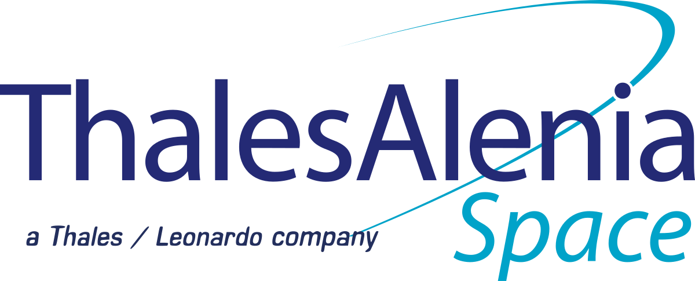

Work Experience
Tech valley Solutions Ltd
Project: Cyber Threat & Detection Response (CTDR) For Department of Telecommunications (DOT)
Time period: February 2019 to Present
Designation: Sr Executive in Network Team
Job Responsibilities:
Playing Role as a Sr Network and system Integration Engineer in , Cyber Threat & Detection Response Team. Preparing HLD (High-level Design), LLD (Low Level Design) for deploying secure, scalable network solutions as per
project requirements.
Coordinated new site integration with customers and provided Router, switch & Server configuration. Created and maintained network topology documentation as new sites were integrated.
Performed Configure and troubleshooting on Routing Switching & VLAN tagging, HSRP, VPC, LACP, Port-Channel etc.
Provide engineering technical remote and site trouble shooting support.
Preparing and executing MOP (Method of Implementation) approved by customers for existing or newly deployed networks, Provide high level technical training to customer
Created test reports and implementation plans as requirements were met with new solutions Performed on
Transmission to cover all the Bangladesh for Project Requirement
Managed vendor relationships as the Technical Human on 3rd-party and OEM products, including CISCO, Juniper, Dell, and ALLOT, tracked and resolved issues for system, network and customer issues .specially
working with ALLOT Deep Packet Inspection (DPI), Cutover in IIG site between core and Distributor router, NX
Operation, and clear see Report Generate in different way. Deploy Allot DPI in IIG sites.
Coordinated WAN analysis and WAN migration. Corrected networking connectivity issues in wireless, routing, and switching using a layered model approach. Concept on Cisco FDT, ISE, TACACS
Completed core refresh projects involving Cisco Nexus 9K switches Work in Linux environment Ubuntu/centos/Redhat,
Executed configurations for routers, switches, wireless AP's, and WLAN controllers using Cisco hardware. Integrated new company acquisitions and mergers including circuit cutovers, equipment upgrades, and detailed walkthroughs with onsite technical personnel.
Thales Alenia Space, France
Spectra International Ltd (Local Partner Of Thales Alenia Space)
Project : Bangabandhu Satellite-1
Time period: June 2017 to 31 Jan 2019
Designation: Network Engineer (Net-E)
#Trainee At Thales Alenia Space (Toulouse, France) Role: Network Engineer (User Segment, VSAT & HUB)
Time period:June To November 2017 (06 month)
Job Responsibilities:
Playing Role as a
Network Engineer in
User Segment of BS1 system,
Write
Bangabandhu Satellite-1 operational procedures and & Business process system regarding the ground sub- system: control and monitor Space Gate Hub (NMS), configure Space Gate router (PBR)configure interception (LIMS), manage switches (Juniper and Cisco), configure PEP, configure L- band Matrix.
Configure Network Management System on (NMS), Configure Satellite Link on DvB-NMS. Check Network feasibility also, Configure Lawful Interception system (LIMS), Associated task with Provider Bridge Router (PBR), Like MAC and IP address bindings. End user Modem Configuration with Access Network Link. Auto failover
Manage Cisco and Juniper Switches and Routers. Manage DvB Hub and Space Gate end-user modems. Log analysis, report generation to inform concern department. Configure L-band Matrix. Configure Network
Planning Tools for satellite communication. Provide high level technical training to customer
Perform PAT (Preliminary Acceptance Test) and cooperate project stakeholders to get PAC (preliminary
Acceptance Certificate) upon completion of project.
Provide on Job (O&M) Training to the client as a network Engineer.
Prepare and Perform End to End Capacity tests with the Thales Alenia Space team under the client witnessing.
Aamra Networks Ltd
Time period: Feb 2016 to May 2017
Designation: Executive, Technical support
Job Responsibilities:
Planning & implementation of
CISCO& Mikrotik oriented network project where have to configure Network Security, Routing & Switching, ACL, VPN EoIP), Tunnel (GRE, IP-IP), VLAN, Load Balancing with failover etc
Configure Router, IP Routing, ARP IP MAC Bind with Bandwidth Manager, Auto Fail-Over, L2 & L3 VPN, , GRE and EoIP Tunnel, Bridge connectivity in Mikrotik RouterOS Board. And CISCO product.
IPLC Connectivity status monitoring, troubleshooting through Remote web interface
Mail related problem (incoming/outgoing) server troubleshooting in all kind of mail application software (Microsoft
Outlook, , MAC OSx Mail)
Administering & designing LAN, Wan internet/intranet, networks. And LAN site PC Troubleshoot Analyzing
& developing key components using methodology prescribed techniques
Design and deploy Data connectivity. 2nd and 3rd Level Network troubleshooting.
Managing and troubleshooting all escalated calls from Field engineers. Installation, Integration and maintenance of LAN and WAN setup. Better network quality. Taking measures to solve the problem which are causing lag in network
Time to time monitoring the link status. Coordinate with Call center, Service &Support team,
Network problem finding and troubleshooting in an early possible time through remote assistance or over phone.